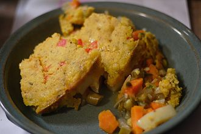

Home
Hot Tamale Pie

Description
While this recipe for tamale pie has very little to do with
south-of-the-border namesake, it's really delicious all
the same.
Ingredients
- Cooking spray
- 2 pounds ground beef
- 2 cups diced poblano peppers
- 1 (16 ounce) jar salsa
- 1 teaspoon salt
- 1 teaspoon ground dried chipotle pepper
- 1⁄2 dried oregano
- 2 (8.5 ounce) boxes dry corn muffin mix (such as
Jiffy), divided
- 2 eggs, divided
- 2⁄3 cup milk, divided
- 8 ounces frozen corn, thawed
- 4 ounces shredded Chedder cheese, divided
- 4 ounces shredded Monterey Jack cheese, divided
Steps
- Gather the ingredients. Preheat the oven to 350
degrees F (175 degrees C). Spray a 9x13-inch casserole
dish with cooking spray.
- Cook and stir ground beef in a Dutch oven over
medium-high heat until meat starts to brown and release
its juices, about 5 minutes. Reduce the heat to medium
and stir in poblano peppers, salsa, salt, dried
chipotle pepper, and oregano. Cook and stir until beef
is crumbly and no longer pink, about 10 minutes.
- Meanwhile, whisk one package corn muffin mix in a
large bowl with one egg and 1/3 cup of milk until
combined; spread into the prepared baking dish.
Sprinkle corn over top, followed by 1/2 of the Cheddar
and 1/2 of the Montery Jack. Spread beef mixture over
tehe cheeses.
-
Mix remaining corn muffin mix, egg, milk, Cheddar, and
Monterey Jack in a bowl; carefully spread over beef
mixture to within 1/2 inch of the edges of the dish.
- Back in the preheated oven until golden brown, 50 to
60 minutes.
- Serve and enjoy.